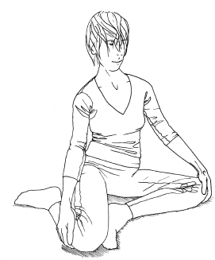

Feldenkrais for Actors
(The) very structure of reason itself comes from the details of our embodiment.
Internet Encyclopaedia of Philosophy, 2005
Character
Feldenkrais is a fabulous tool if you are thinking about character, since, as you discover more possibilities in yourself, new ways of moving and being are more likely to emerge as you play. It also becomes more possible to find new patterns by observing and stealing them from other people, because your ability to feel differences in yourself will also allow you to begin to see the differences in others much more accurately. That in turn enables you to try out their way of being more accurately and in a more integrated way (as opposed to pasting bits of it on like a false beard). Eventually this may not necessarily be a case of consciously copying (useful as that can be for learning and exploring) but may come about because something appropriate emerges in the moment. The thing to remember is that only what is available in you can emerge. If it is not available it can’t. Simple as that. Hence all the Feldenkrais work, which enables you to have as much available as possible for the moment you need it.
Okay. That’s going to take a little more explaining to be clear.
What Makes a Character?
We could say that a character is just a person revealed through their behaviour in a series of situations. They are the kind of person who speaks, acts, behaves and responds as written in the text, and that’s all. As a result of the contraction of time, the concentration of events and the focus on humour or drama in a play or film, either the character or the situations faced or both may tend to the extreme. However, it is still essentially a person seen in a variety of situations, so that if you play what is there in the writing and in the moment, the character should be revealed (it depends on how well written the script is, of course). And it also depends on what you have in your toolbox and in your range of play.
Given this definition of character, we can remind ourselves that every person learns their own patterns and habits of movement from birth (as in Part 1), and that developing ways of feeling, experiencing, responding to and acting in the world is tied in with learning to move (as in the previous chapter). We have already seen that this means that every person’s movement patterns are an intrinsic part of their emotional and behavioural patterns. We have also seen that each person learns all this in an environment that includes the people they are brought up by and the values of the wider community, as well as the positive and negative experiences they have, the activities they are drawn towards or not, and so on. We have seen how all these aspects of each person’s history (and more) are part and parcel of the quality and range of movement they have and how they hold themselves, and we saw this is not so much a duality of mind and body as an integrated whole.
All this is the stuff of character. You can see, therefore, that understanding the society, the background and whatever can be gleaned of the personal history and relationships of a character is important in many kinds of play and film – hence the historical or social research most actors do; the analysis of the character’s situation, their desires, motivations and strategies and other characters’ attitudes and responses to them. However, there is a danger in actors ‘working on their character’ alone, elaborating on the text, making decisions and then playing some intellectual idea of the character they have developed in their head. An actor also crucially needs to discover what all the above means for how they behave in the moment, respond to the other actors, inhabit their skin, breathe, move. It is an argument for discovering by doing, playing and trying out, all of which is also fundamental to the Feldenkrais Method. In addition, awareness of self and development of skill through movement will make a significant difference to the quality and detail of characterisation that an actor may be able to find.
As I said in the Introduction, Feldenkrais pointed out that movement is fundamental to everything – indeed, there is no life without it. If you have ever seen a corpse you will know what he is saying. The stillness is shocking. The movement of breath, blood flow, digestion, the constant level of work in the muscles, the ripples and shifts that are so unremarkable in a person at rest are startling in their absence in death… Movement is life. Not just the external trappings, the picture-postcard, signposted version of a person’s movement, but the feel, the muscular tone, the rhythm, the quality, breath and pulse of this person; and the detail of how they negotiate their way through the world, down their street, across their kitchen. How they mould themselves to meet their life. To fit it.
Discover this within the context of the text and you have most of the character. Find it from playing the text, or from the games you play with the text, or around the text – or however you like to do it. If you have no text because your project is to be devised, then you can work the other way around – movement first and then find out about the sort of person who moves like that. You can go backwards and forwards or any way around till you get there. As long as you understand that who and how you are, and how you move and behave, are part of the same thing.
The embodiment of reason via the sensorimotor system… is a crucial part of the explanation of why it is possible for our concepts to fit so well with the way we function in the world. They fit so well because they have evolved from our sensorimotor systems, which have in turn evolved to allow us to function well in our physical environment.
Lakoff and Johnson82
Self-image
The opening sentence of Feldenkrais’s book, Awareness Through Movement, talks about the same thing: ‘We act in accordance to our self-image. This self-image – which, in turn, governs our every act – is conditioned in varying degree by three factors: heritage, education and self-education.’
Let’s look at this statement in detail: ‘self-image – which, in turn, governs our every act’ is an enormously powerful thing to assert about us as human beings, and very significant for actors and what they can play. How differently and specifically you can mould yourself to the character also depends on how much your self-image can contain. For instance, if I can only see myself as the little bird person my slight frame suggests, and if I have strongly invested in that image of myself, then I will move all the parts of myself like the tiny fragile thing I have identified myself with: that’s how I will be seen, what I will bring to every role and how I will be cast. If I have found that I can move differently in a way that gives me an experience of myself as powerful, strong and resilient, then I will have that other possibility available – but only if I can actually welcome and contain that image of myself and not reject it as too strange, unfamiliar, threatening to my way of life and relationships, or just ‘not me’. It interests me how many ways of moving and being an actor willingly rejects because they do not want to own that possibility. It’s really normal to reject things, but it’s very interesting that we do in this situation. I see it all too often in my drama-school students at the end of a lesson. Sometimes they love what they have just found, but sometimes they respond with: ‘Oh, it feels weird, I don’t like it!’
A while ago I had struggles with the requirement to stamp in certain karate movements. I couldn’t work out how to do it in some more demanding positions, like at the end of a long lunge along with an elbow strike. I shifted my weight very carefully and placed my foot softly, even elegantly. ‘No,’ said Sensei Kevin. ‘Stamp! Don’t be so delicate. Stamp. You are meant to be stamping on someone’s foot. Stamp! Strong. And kiai [shout]!’ I tried. I failed. I wanted to do it right, and it’s not like it’s a very hard movement. I knew I needed to shift my weight forward quicker so it was over my foot. Hell, every kid knows how to stamp. I know how to stamp! But something in me held me back, got in the way of letting me work out the timing of shifting weight to allow me to stamp. Something in me did not want to own this stamp. I didn’t want to feel the jarring quality of the movement. I didn’t want to bang the ground. I didn’t want to contain that possibility. I didn’t want to be the person that stamps or be seen that way. I wanted to tread lightly. Being able to tread lightly is great. Stamping and banging around is not a good mode of being most of the time: not for joints, not for the world. But there are times when it is just the thing you want, and to limit myself like that is… well, a shame.
There may be ways of being and possibilities that you just don’t want to explore or contain – actors get asked to go to some pretty extreme places, after all – or there may be roles that are just too far away to be a reasonable ask. No one can play every character. I will only be the fighter I can be within what is possible for me. I won’t be Sensei Kevin Goodman or Sensei Linda Marchant, or even the person of my own grade next to me in training. But I can contain a wider or narrower image of me. I can be more or less ‘me’. As an actor, you can have more or less to play with. Often actors chose to stick to a narrow path, not just in the characters they play but even in the responses they give. It’s very understandable in the context of the business. But Feldenkrais offers you a safe way to experience something that might enable you to break out – or edge out – of those limits.
Observation of Self and Others
We have seen that, to know or mould yourself to anyone else’s movement, you must first know your own, since if you have no idea of your starting point, you cannot know how it could be different. Once you get a sense of the different ways you can be, you can also start to recognise the range of possibility in others. It is at this point I like to ask students to analyse what they can see in other people. If you have just done a lesson that clarifies for you some of the different ways you can use your leg in relation to the rest of you when you walk, you are more likely to be able to see which of those possibilities someone else prefers to use. Then you can notice that what you read from them contributes to any judgement you make about their character. For example, we have seen in Part 3b that, when you shift weight from one leg to the other in walking, whether you swing your head through space or leave it more or less in the middle, makes a difference to our sense of you. But there are a million details in walking. It is extraordinarily complicated. Change one detail in the way you use your toes, your eyes, your shoulders, your jaw, even your wrists when you walk, and you will read differently to the audience. It can be difficult to work with this without it being self-conscious, mannered or tagged-on, unless you have a considerable wealth of choice available to you so that a deeper response can simply emerge in the moment. We are not talking about ‘silly walks’; rather, the job is to make as much available in your system as possible; to recognise difference and play with it so that you can trust it to turn up appropriately without ‘playing’ it, as such. Here we are back to ‘techniques happen in the absence of conscious thought’ (the Bubishi) and the discussion of awareness in Part 2. As I have already said, only what is available in you can actually turn up. If it’s not there, it can’t. And that’s where Feldenkrais comes in.
Feldenkrais in this context is a tool many actors learn to love. It is utterly fascinating to have clearer ways of actually seeing what is going on: an infinite set of filters through which you can feel what you do, then see what someone else is doing and use it to inspire ways to find new versions in yourself.
Here is a very simple practical example to illustrate this.
Relocating Your Hip Joints
Put your fingers on where you think your hip joints are. Hip joints, not hip bones, i.e. where you think the top of the thigh bone actually meets (articulates with) the pelvis. If you do this in a group of people they will often have quite different ideas.
Go to p. ii and look at the picture of the skeleton, and the picture of the pelvis on p. 107. When attempting to locate their hip joints, some people will touch the top rim of the pelvis known as the iliac crest (think of the stereotypical ‘hands on hips’ stance when someone is cross). Some will put their hands lower down on the outside of the leg at the widest point of the hips. This makes some sense, as you can feel that place moving when the leg moves. It is part of the thigh bone, but is actually the outer-most point of the bone called the ‘greater trochanter’, from which the leg bone then does a sharp turn inwards (and still a little upwards) deep inside the groin, where the hip joint actually is.
To find where your hip joints really are you can put your hands on the foremost edge of the iliac crest and then run your fingers down the crease of the groin towards the lowest mid-point of the genital area (or where the two pubic bones meet in the middle). Roughly halfway down that line, but a fair way inside you, are the hip joints (have another look at the pictures). They are much closer to your midline and deeper inside you than you may have imagined: as close to the back of you as they are to the front. You might have appreciated this in Lesson 5: The Pelvic Clock and, if you didn’t, it is well worth doing that lesson again with this new awareness, as it will be a different experience.
So now we can play a game with it.
Imagine your hip joints are indeed at the iliac crest, the top rim of the pelvis. Now walk as if your legs join and move from here. Make it as normal as you can. One way is to start by exaggerating to get it then do less and less until the idea is still there, but you are not overdoing it. How does it feel? What does it do to other parts of you – how you hold yourself and move overall? Who is this person? How do they relate to the world?
Now shift your imaginary hip joints to the outside of your legs at the widest point of the hips – the greater trochanters. Walk as if your legs are jointed here. Make it more subtle, more normal; allow the rest of yourself to join in so as to make it possible. Ask yourself the same questions.
And now deep in the groin where they really are. How is this different? (Have another look at the pictures to be clear.)
In fact, you can move them all over the place – try locating your hip joints somewhere obviously impossible like your armpits or the back of your neck. You may find some interesting things. You can exaggerate or you can bring it right down to just a hint of the idea.
This is interesting in more than one way. Firstly, it illustrates how your idea of yourself affects how you move, otherwise how could you change the way you walk by simply imagining you have relocated your hip joints when they actually stay in the same place? But secondly, now you have felt these different possibilities in yourself, it gives you a way into seeing and trying out where other people think their legs are jointed and how they use them.
Where Do Other People Have Their Hip Joints?
Next time you are in the street, watch a few people carefully (don’t be obvious or they won’t like it). Where do they think their hip joints are? Where do they move their legs from? What does it make you feel about them as a result? It is only one aspect of the person, so don’t expect it to affect them all the same way or to be able to make any rule about it. Just get an eye for the range. If you start looking and working like this you will soon see other aspects of what makes one person different from another.
Planes of Movement
This is just one little idea: where people move their legs from is influenced by more factors than this. Walking is very complex, and you could use many of the lessons in the Feldenkrais Method to sensitise yourself to the ways all the different parts of you can be involved – the above is just a quick taste: the lessons contain far more detail.
For example, one set of filters I use is ‘planes of movement’. If you go back to Lesson 5: The Pelvic Clock, there are two main planes that the pelvis – and so the whole spine – is moving in: tipping the pelvis up and down to 12 and 6 creates bending and arching through the whole spine, while tilting left and right to 3 and 9 creates twisting.83 The third plane (which replaces twisting if you do The Pelvic Clock sitting upright on a chair) is side-bending/lengthening.
These three planes together in different degrees make up the foundations of every movement we do. You can work with these planes in a myriad of ways in any number of Feldenkrais lessons to improve your own pelvic and spinal movements. As you develop a better sense of these planes and how they combine in day-to-day movements (like walking, reaching, pushing, pulling, lifting), you see how other people put their movements together – ways you could probably never conceive of for yourself! Some people walk in a cowboy style, mostly side-bending and swaying the chest and head. Some people side-bend or even translate lower in the hips (sticking the hip straight out to the side): a more stereotypically ‘female’ walk. Some people walk with a stronger arch in the lower back or a lifted chest; some with a rounded back, some go from one to the other more subtly in a kind of wave; some have a strong twist mostly down in the hips, some twist all the way through the back; some side-bend as they bring one leg through, and twist as they bring the other leg through. And there are as many varieties as people, especially once you add in rhythm.
I had fun with one actor who had to go from playing a cowboy in one film to playing a courtier at Versailles during the reign of King Louis XIV in another film. In the second film he needed to be believable both as a swordsman and as a proficient court dancer. We worked with the shift from his easy cowboy side-bending style of walking to being able to twist better. That way he could stay more upright around his central axis and keep his head quieter, both for greater poise and for the baroque style of movement he now needed. I had done a little to help that same actor improve his punch by working with the connection of his hip to his arm in a scene about a boxing match: twisting again.
Here is a lesson to help you feel that kind of twisting around the axis and where your leg moves from.
Lesson 10: Where Does Your Leg Move From?
Walk a bit. As I asked right at the start of the book, notice what happens when one leg goes forward. Does that side of your pelvis go forward too? Or backwards: in the opposite direction to your leg? Or does it stay quiet? What about your other leg?
Keep walking. What happens when one leg becomes the back leg? Has that side of your pelvis gone backward too? Or forwards: in the opposite direction to your leg? Or does it stay quiet? What about your other leg?
Do you feel any twisting movement in your back as you walk? If so, how high up your back do you feel it?
Lie on your front with your head to the right, your right arm on the floor but bent so you can see your hand. Bend your two knees so the soles of your feet are towards the ceiling.
Let your right foot lean against your left lower leg and begin to slide that foot down the inside of the left lower leg so that it pushes the left leg: both feet will travel to the left. Your knees don’t slide on the floor. Then return. Make this movement many times and feel how it starts to invite your pelvis to turn, so that your belly rolls a little on the floor. Notice how high in your spine you turn to help with this movement of the legs. You may notice it by feeling some places in your front lean more on the floor or peel away from it.
Have a rest and then try the same movement on the other side: with your head to the left and legs going to the right.
In the original position, head to the right, put your legs (knees and ankles) close together, touching – as if they were tied together. Now tip your legs to the left again. Don’t let them separate. What happens to your right knee? Can you feel how it has to leave the floor if you are careful not to let your legs separate by one sliding down the other? Go gently, but notice how high you start to turn in the spine now, and how much of your front changes its contact with the floor. Where are your legs moving from now?
Be careful: it is important to focus on exploring how the ribs and upper back can join in, otherwise your lower back could end up doing too much, which might become painful. Also listen to where your heels are. Notice that if you bring them closer to your buttocks, your lower back will arch more, so be careful that your knees stay more or less at a 90˚ angle and the movement is not ‘cut off’ by too strong an arch in your lower back. Also listen to your tailbone. If you start to stick it out, your back will over-arch and again the movement will get stuck there. Have a sense that you can lengthen the tailbone away and the front of the hips can open up to the floor as you roll. If it is not comfortable do it differently, or stop.
Do the same on the other side.
Come back to the original position, head to the right, legs close together, and this time plant your right hand as if for a push-up. As you tip the legs to the left again, feel how the pelvis turning and the legs going down to the side can help you lift your head and look over your right shoulder in the direction of your feet (you probably won’t see them, it is just a direction). Your right hand is there to help and support, but see if you can find how the legs and pelvis are the motor for lifting your head rather than relying on your arms too much. Can you find how it could become all one movement? It could feel a little like a see-saw: legs go down as head comes up, then head up and legs down.
Other side.
This time plant both hands, head to the right. As your bent legs go to the left and you lift your head to look towards them, let the right leg slide even further back. It might be that the leg going back could carry you into sitting if you let one hand peel away, but spend some time just noticing where this leg is moving from: how much does the twisting and arching movement of your back (and lengthening of your front) enable this backward movement of the leg? Can you feel it even high in your chest? Maybe up to the base of your throat? Don’t force it, just play with it.
Other side. You can also play with going from one side to the other!
Have a rest on your back. If you feel it is over-arched, bring your knees to your chest a few times.
Now stand up and walk again and see if you can feel this twisting motion in walking. Can you feel your pelvis move forward and back with your legs? How high in your back do you move now to allow your pelvis to turn and help your leg move? Stop your back and pelvis from moving and feel the difference. Now you can only walk from the hip joints. And now let your back and pelvis turn again. (Sometimes you can feel the twisting more clearly when you walk slowly backwards!)
You can also use Lesson 9: Twisting Around the Head to explore where your leg is moving from. Again you can notice how high up your back has to twist for your legs to go over to the side. In the very last part you can notice how high up in your ribs and spine your side has to lengthen for your leg to push away. Conversely, Lesson 10 can teach us about the head – the original name of the lesson is ‘The Carriage of the Head’, because in it you find how the leg and pelvis help to bring the head upright as you come to sit.
Different Parts
You can also look at where people move most or what leads them. Some people seem to move most with their shoulders – or even their heads – dragging the rest of themselves around. Some people’s chest or hips dominate. Sometimes almost nothing seems to move except somehow the feet and legs. This is familiar territory, I am sure, but when you get more specific about exactly where and how, and underpin it with a more subtle understanding of planes, it gets interesting.
For example, take the feet. Not only do people angle their feet differently by turning their toes/heels in or out and have them narrower or wider and so on, but their weight is distributed through different parts of the feet because of how they stand and walk: some people lean more on the inside or outside of heels, or the balls of the toes – or even on the balls of specific toes – or they might clench the toes or even lift them. Their choice will affect their entire gait.
You need at least two or three people for this.
Fill a large (clean!) cat litter tray with sand (or head for the beach).
One person steps into the sand in bare feet and makes a clear set of prints in the sand. Then they step out again, careful to disturb the shape and depth of their prints as little as possible.
A second person then steps into those prints, very carefully matching their feet to the shape, angle and relative depth of the different parts of the prints. Matching the angle of the feet makes a big difference, but when you include the depth of the prints in this way, the second person has to adapt themselves to how the first person carries their weight. It is often a big shock to really feel how everything throughout their whole body has to change as a result – even how they hold their head. Jaws drop.
The second person then steps out of the box maintaining that posture and walks about like that to feel who this person is.
Whatever you feel when you step into someone else’s prints isn’t really how they feel, even though it may share something. It depends on how your system can adapt and what that brings up in you, but it is still a way into feeling something very different. (On occasions you do get uncanny resemblances to the other person. On one occasion the second person found themselves walking with just one arm swinging, exactly the same way the first person did.) The more possibilities you have to adapt your ankles, feet, hips, backs – in fact, everywhere – the more possible it is for you to really take on what you find and use it well. You have to go back to the Feldenkrais Method to help develop that!
There are many ways that Feldenkrais can enable an actor to find different uses of themselves for character.
Sometimes people come to me with difficult postural challenges that they want to explore for a character, and to look at how to avoid pain from playing that character for any length of time. One of the first times I used Feldenkrais, before I was even a fully trained practitioner, was to help an actress playing someone with severe kyphosis (hunchback). She needed to know how to find the way this person was and then how to go in and out of it, so that she could play believably and consistently but not get stuck in that posture all the time for all those months!
Then there are countless actors or students who have wanted to feel taller, more open, more upright, more balanced either to play a particular part, or just to have that possibility more generally available to them.
I also drew on Feldenkrais when working briefly on Alecky Blythe’s verbatim play Where Have I Been All My Life? at the New Vic, Newcastle-under-Lyme, to enable some of the actors to find how to play characters from real life. I was given very specific descriptions of the characters, like ‘a man in his sixties with a hip replacement that has gone wrong’, or ‘a man in his nineties who is blind and has emphysema’, and to help one actor differentiate clearly between the two young men he was playing. In all these situations I got them to feel certain specific things they did naturally as themselves (e.g. feel what you do in your ribs when you walk) and then gave them a simple physical constraint (e.g. don’t allow movement in your ribs on the right side as you walk). This changed what they did indirectly in a way that I knew would relate to the description (e.g. how they could use their right leg) without resorting to playing an idea of what they should look or be like (e.g. thinking about holding the leg). Sometimes we tried several different constraints till we found the right one. (See also discussion of the use of ‘constraints’ in Feldenkrais on pp. 196–9 and 226–7.)
Eventually, through Feldenkrais and what that enables you to see and explore, you will have experienced a wealth of possibilities that could emerge for a character without consciously thinking. Or, if you are devising work, you can see what some small shift in the detail of your self-use brings up. There are other very important aspects to explore: the rhythm of the person’s movement, the way they take up space, and so on. Lecoq’s teaching offers ways of exploring different qualities and ways of being through different elements and materials, and other methods can feed in here too: Laban, in particular, will give you another series of filters to play with – acceleration, direction, resistance/pressure and flow, for example, while Body Mind Centring gives you many different experiences of yourself in other ways. All of these combine well with Feldenkrais.
Allowing a Character to Emerge
Here is a game for you to explore what I mean by ‘letting what is available come up’. I devised it before I was aware of Michael Chekhov’s ‘psychological gesture’, but it turns out to be pretty close to it!
Moulding to a Character
This game can only draw on the possibilities you have available, but asks you to use the awareness and listening skills fostered by your Feldenkrais work to allow a character to emerge, rather than have you act out a preconceived idea. For this game you will need to have already done some research around your character so that you have a sense of their background, their social and personal history, and their journey in the play. But it also assumes that you have done very little practical work and not developed too many fixed ideas about how to play that character. You need to be very open to possibility, or you will just trot out your ‘idea’ regardless.
Begin standing simply and listen to how you are. Where is your weight in your feet? Do you stand on one leg more than the other? (Don’t change it, just notice it.) Is there any sensation in your stomach or in your guts? What moves with your breath? How easy does it feel? Notice what places are working most in your legs, belly, back, shoulders, neck, jaw, face, fingers… and anything else that grabs your attention.
Now bring into your mind the character you have prepared. If the character has a big story arc, it may be that you will need to keep in mind what they want or who they are at a specific point in the play, and then do the exercise again at a different point. So now just bring them to mind.
Don’t do anything consciously, but notice what changes in your sense of yourself. Maybe there are subtle shifts in the way you breathe, where your weight is, the level of work in certain places.
Let go of the character again and see what you do to ‘return’ to you. Sometimes what you undo is more noticeable than what you did.
Do this a few times for a few minutes each time and then let it go. Each time allow it to go further. Don’t censor yourself because it doesn’t fit your plan. If a load of rubbish happens you can chuck it out. It’s just an exercise.
Gradually increase the sensation in the directions they are already going. Try not to interfere and turn it into something else. Allow it to mould you, shape you, from within: the way you stand and breathe and hold yourself.
See if you can allow movement to arrive as a consequence. It might feel right, it might not. Maybe moving around the space, maybe some kind of gesture or movement remaining where you are. You can let it get very big – unrealistically big if you like. You can also bring it back to very tiny, so that it is barely there, but is enough for you to feel the difference.
Try and bring it down to one repeated movement or one shape that somehow encapsulates this way of being.
Let it go slowly over a count of five or ten so you can feel what you undo.
Go back there and undo it again a few times so it is reversible. It will be there for you to re-find when you want, or you can decide it’s not on the money and try something else. Anyway, it will all be useful information.
This kind of exercise can only draw on the possibilities you already have in you. For example, if you don’t have any differentiation in how your foot meets the floor, if your weight always falls in the same pattern on your feet, if your ankle responds the same way, if the hip and the back can’t adjust to allow the foot to land differently, then you will always plonk your foot down the same way when you walk, whatever character you bring to mind – or you might insist on making a difference that isn’t fully integrated and, as a result, will look like a caricature. The more possibilities and the subtler the differences you have, the bigger and better the toolbox you have to draw on. Feldenkrais helps you develop that toolbox.
Creativity
At the heart of both clowning and Feldenkrais there is a beautiful mystery. In both, there is pleasure. There is delicacy. There is sensitivity and deep listening. I think this is why Dr Feldenkrais himself seems so like a clown to me. He is so fully present with himself, so authentically who he is and so alive to the people before him. And he has great clown hair.
Emily Davis, Feldenkrais for Artists in NYC84
In Part 1 we talked about how the organic learning a child does is playful, curious and explorative; how skills emerge over time, bit by bit, as they piece themselves together through trial and error. There is no known goal and no instructions about how to do it ‘right’. Later in life there are games and sports that children play that have a containing pattern or rules within which they can explore, play, develop skills and make discoveries, be it ‘witches and princesses’ in the playground (where the rules are probably constantly being created and changed!); or painting, where the constraint might be that it is on paper with a brush; or riding a bike, where the constraint is having to keep moving on two wheels without falling off. All this learning is innately creative, and involves exploring and finding solutions within constraints. This is also how a Feldenkrais lesson works: it establishes constraints that enable us to become aware of what we have available, and to explore finding variations and differences.
I think of play as training for the unexpected.
Behavioural flexibility and variability is adaptive; in animals it’s really important to be able to change your behaviour in a changing environment.
Marc Bekoff85
That’s why the Feldenkrais Method is so suitable for actors: because it encourages responsiveness, spontaneity, flexibility and adaptation to the situation – all great for survival, great for health in its broadest sense, and great for actors.
Lie on your back, bring your knees up over your chest and hold your right knee with your right hand and left with left. Roll on to your right side like that and stay there, still holding your knees. Now, can you slide your left knee away from your head and down on to the floor below your right foot?
But the rules (or constraints) are:
• You must not let go of your knees or even slip your hand.
• You must keep a firm grip.
• Your face must follow your left knee – until the moment you discover it can do something else!
How do you get your knee to the floor below your right foot like that? What has to happen to the rest of you and where can you end up? There is a picture at the end of the chapter, but don’t cheat by looking at it now. Just do the exercise! Try. Who cares if you don’t work it out? If you do you will have the joy of discovery. If you don’t, you will have the pleasure of being curious about the puzzle.
Not Knowing
Did you cheat? Congratulations if you didn’t. You have to hang out with not knowing, and very few of us like doing that. We want to know where we are going. What we are ‘meant’ to be doing instead of just letting something happen and seeing where it goes. But this ability to let things happen without knowing where they will take you is what you need to create.
It is very clear in clowning because there the comedy of the situation is predicated on the clown not knowing what he/she is doing there at all. It is the awful comedy of it. ‘You two are on stage and you have to play Othello. But you don’t know the play. All you know is that it has something to do with a handkerchief.’ That’s one of the exercises I remember Gaulier setting us. He would repeatedly take possibilities away from the performer who already had their plan of how to entertain us and be funny until they were so lost and ‘in the shit’ with no idea what to do, that the audience spontaneously started to laugh. Something real was happening at last.
If an actor carefully and diligently makes all their decisions about their character and how to play the scene, they leave no space for anything actually to happen. They get very busy in that corridor of theirs. At that point the audience switches off. Feldenkrais said it was the difference between ‘exercise’ and what he did. When you exercise you have an intended end. In his work you don’t always know where you are going, or if you do you don’t know the route. You try things out. See how it goes. Turn back, go another way. Allow it to turn up. Playing, rehearsing, without knowing exactly where you are going leaves room for something to turn up, something to surprise you – and the audience. ‘Laissez le blague arriver,’ Philippe Gaulier used to say: ‘Let the joke turn up.’
No Rules
This fits with what I said earlier about there not being fixed, universal rules about how to do things: nice known routes and certainties rather than this more risky venture into the unknown. It is difficult because we all like to be right and be successful, and we all like having a recipe that tells us what to do, and how and when to do it, but in terms of creativity it doesn’t work. There may well be rules to a particular game, but nothing universal. Same in Feldenkrais: constraints within which to explore and relationships between places and patterns that work better or worse depending on what you want to do, but no fixed rules. Rules that need to be adhered to don’t work for actors. If you always have to hold your head in one alignment, you are in trouble when you play a character who doesn’t or when you do something that involves moving it out of that alignment (it’s all in Part 2b on posture). Constraints or rules of the game are great for creativity because they involve problem-solving, variety and thinking on your feet. Universal rules of how you always ought to do something are not because they don’t. Not to make a rule out of it…!
Not Forcing
Not forcing means allowing, but it also means having the delicacy and the sensitivity to let something grow from very little, to let it breathe and play and develop into something. That is an exciting thing to watch happen between people. When an actor comes on, ignores what the other actor offers and forces an idea through or forces their emotions and intentions on us, we tend to turn off. It becomes boring or even unpleasant to watch. It feels dead. Nothing is really happening. Sometimes it can feel like an assault.
If the Feldenkrais Method does anything, it teaches you sensitivity: sensitivity to fine differences between this little movement and that; the way this variation feels and that; between pushing and inviting, doing and allowing, too little and too much, easy and not-quite-so easy. It gives you a sense of where the edges are and what it means to go beyond them. It shows you how little you need to do to make a huge difference: change the way you move your eyes or hold your jaw, and your head rolls utterly differently; feel where your weight needs to be for your leg to lift and become weightless.
Push and strain and work and that’s all you get. Who wants to watch that? It gets in the way of everything. In particular, it gets in the way of listening, and listening is what acting is all about. In a sense, ‘actor’ is a terrible name as it just implies doing. Maybe we should say ‘listeners’ or ‘responders’ instead. Feldenkrais trains you to quieten yourself down and listen. It may be that you work in a form that invites you to push beyond boundaries or uses tension as part of its creative style, but there is a difference between that and having limiting habits restricting where your boundaries are in the first place, or compulsive tension that is not an expressive choice.
As John Wright puts it on p. vii, the Method can widen your sense of yourself and what you can do. Sometimes it throws you up against your habitual limitations, which you may not have known you had, and that can be very hard. But just as often it can show you a way through that you had no idea was there and in the gentlest way possible. I have had clients in tears discovering that they don’t have to be stuck in the way they thought they always would be or didn’t even know they were. Tears of sadness that they didn’t find out earlier and tears of relief that they have found a way out now. It’s true for actors too. ‘But I always thought I was clumsy,’ said one student actor to me as he discovered he could spiral up from the floor effortlessly and gracefully. His face was a picture of amazement and delight. It had taken just an hour to suggest he could change his whole idea of himself. The implications of that are huge for his creative potential as an actor.
Pleasure
To make the impossible possible, the possible easy and the easy pleasurable.
Moshe Feldenkrais
As Dick McCaw, Director of the International Workshop Festival for many years, said to me, you need to strip the anxiety out of learning and put the pleasure in as much as possible or not much happens (see also Part 6 on anxiety). It’s true for creating too, which can become pressured, tense and stunted otherwise. Okay, stress, exhaustion and even bitter arguments can have their place in creativity, but my experience is that they are not conducive except under special circumstances involving very particular groups of people. They usually lead to people retreating inwards, not daring to risk – with fairly unwatchable results.
Less anxiety and more pleasure is fostered by the Feldenkrais Method, where there are no gold stars for being ‘correct’ and no minus points for not ‘achieving’. Most of the time you are lying on the floor not having to deal with what anyone else is doing, and therefore not comparing yourself to how ‘well’ they are doing it. You go at your own pace, and as long as you get curious about what you are doing and really involved in exploring, you will come out with discoveries and new abilities – all of which is usually very pleasurable.
‘Amusez-vous merde!’ (‘Enjoy yourself, for fuck’s sake!’) Philippe Gaulier used to shout on occasions at some poor student riddled with anxiety or trying desperately to ‘get it right’: maybe not the best way to reduce anxiety and get someone to enjoy themselves, but his frustration was sometimes understandable and his philosophy impeachable. His highest praise for a clown in my day was: ‘Comme elle est conne!’ (‘She is a complete idiot!’) What other teacher used to berate his students similarly, if a little more gently, with the words: ‘Don’t you know how to be silly? Why is it that no one in this room can be silly?’
Ah yes. That would be Dr Moshe Feldenkrais.
